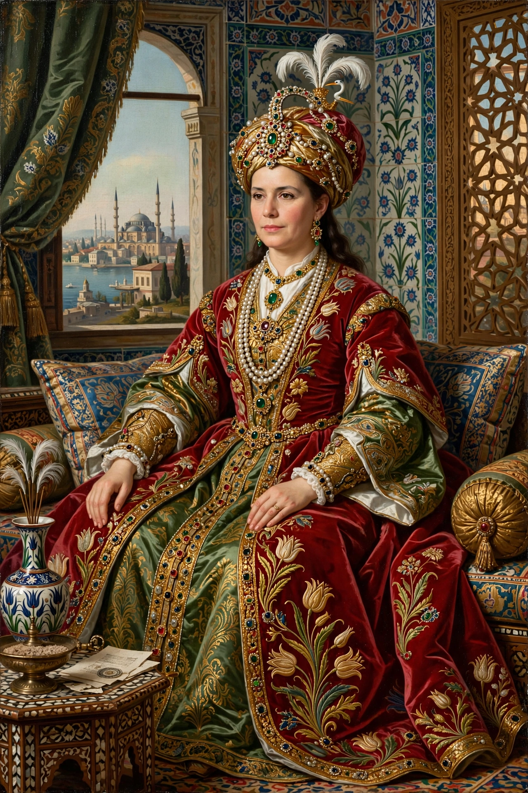

Kösem Sultan (c. 1589 – 1651) was Haseki Sultan of the Ottoman Empire as consort of Sultan Ahmed I, mother of sultans Murad IV and Ibrahim, and grandmother of Mehmed IV. She was one of the most powerful women in Ottoman history and a leading figure of the so-called Sultanate of Women.
Probably of Greek origin and originally named Anastasia, she entered the imperial harem in Constantinople and became Ahmed I's favourite. After his death in 1617 her influence grew through her sons' reigns; she acted effectively as regent during the early reigns of Murad IV and of her grandson Mehmed IV.
In 1651 Kösem was strangled in a palace struggle with Turhan Sultan, mother of Mehmed IV, ending decades of her dominance. She was renowned for charitable works, including mosques and relief for the poor. See Ottoman Empire and Hürrem Sultan.